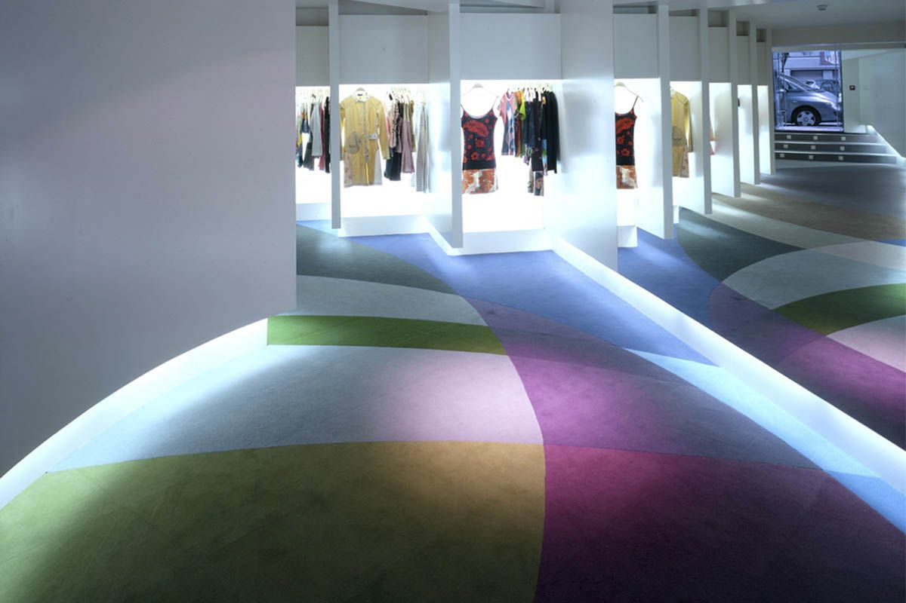
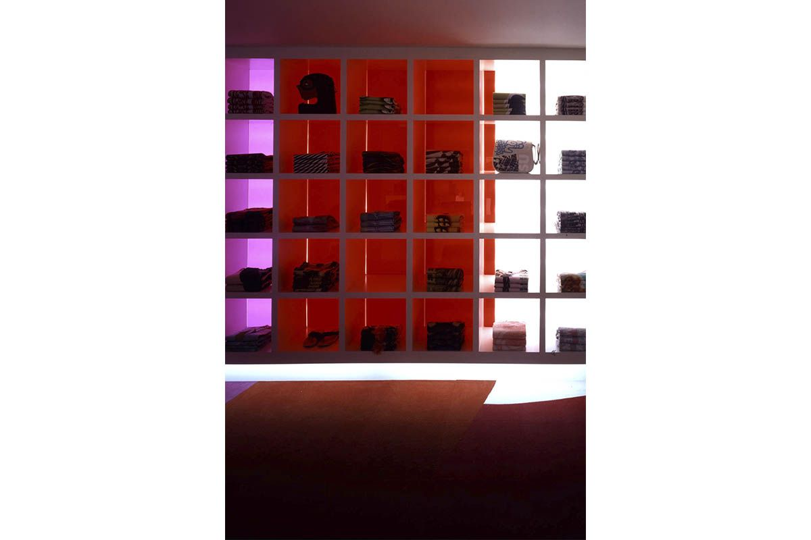

|
2004 |
Tienda Custo BarcelonaLa idea que ha guiado el diseño de la tienda de Custo en la calle Claudio Coello de Madrid, se basa en poder capturar, transmitir y evocar el ambiente extremadamente elegante y vivaz tan característico de la firma y que constituye ya su sello. En particular, debido a la distribución espacial del lugar escogido y a la falta de altura, el proyecto resultó todo un reto desde su principio. Haciendo de la necesidad virtud, la solución al problema vino a través de la iluminación. De hecho, la variedad de estudios y juegos de luces permitió eliminar cualquier posible sensación de claustrofobia. El diseño arquitectónico se basa en el concepto de unidad plástica, de manera que la forma y el color constituyen una unidad, así como Custo Barcelona diseña cada una de sus creaciones. El suelo de la tienda se ilumina desde abajo con el fin de crear una mayor sensación de amplitud. Los tonos degradados de la alfombra, al igual que el resto de la tienda, invitan al cliente a entrar y acceder al espacio, mientras que también proporciona una vía obligatoria para todos los artículos expuestos, hasta el final de la tienda. Las paredes blancas, el suelo de color, y una buena colocación de las luces ayudan a crear un ambiente agradable y, al mismo tiempo, ocultan la falta de altura del local. Por otra parte se ha tratado de no revelar el interior de la tienda a través de la ventana para despertar la curiosidad y generar un mayor deseo de entrar. |

 |